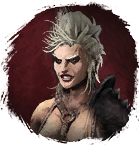
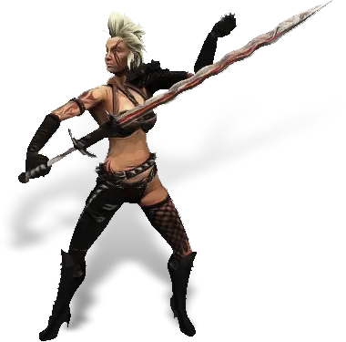

Открыть в интерактивной вики →

| Уровень | лёгк. 55 / норм. 65 / тяжел. 75 |
|---|---|
| Зоны атаки | ближняя, дальняя, ментальная |
| Шанс дропа 100% — уровни | лёгк. 1-40 / норм. 1-40 / тяжел. 1-50 |
| Шанс дропа 90% — уровни | лёгк. 41-50 / норм. 41-50 / тяжел. 51-60 |
| Шанс дропа 70% — уровни | лёгк. 51+ / норм. 51+ / тяжел. 61+ |
| Группа боссов | Непокой |
| Сила (PvE) | лёгк. 1734 / норм. 2829 / тяжел. 5023 |
| Аспект | Gherudu |
| Здоровье | лёгк. 4600 / норм. 9100 / тяжел. 17 200 |
| Мана | 8000 |
| Выносливость | 7000 |
Локация
Навыки


Дроп
 Брошь Кадиры
Брошь Кадиры  Элементарный глиф
Элементарный глиф  Ученический глиф
Ученический глиф 
 Путь непокоя
Путь непокоя 
 II-III
II-III 
 Даймонит 3
Даймонит 3 | Рары | Синергетики | Эпики | |||
 Рары Рары  Рары Рары  Рары Рары | 20-30 ур. |  Эпики Эпики | |||
Прочее:  Брошь Кадиры Брошь Кадиры  Элементарный глиф Элементарный глиф  Ученический глиф Ученический глиф  Путь непокоя Путь непокоя | |||||
Требования для входа
тяжел.: Путь непокоя
Путь непокояКак добраться
Умения
 Удар Головой Удар Головой — критический удар, обычная атака
Удар Головой Удар Головой — критический удар, обычная атака- Бросок
 Боевой Клич Боевой Клич — паника
Боевой Клич Боевой Клич — паника